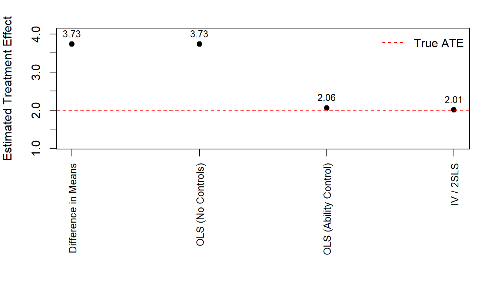

Code
# Global chunk options (chapter-local, reproducible)
knitr::opts_chunk$set(
comment = NA,
fig.align = "center"
)# Global chunk options (chapter-local, reproducible)
knitr::opts_chunk$set(
comment = NA,
fig.align = "center"
)This micro case study uses simulated individual-level data to illustrate the evaluation of a job training program. The focus is on treatment effects, starting from descriptive analysis and moving toward causal estimators in later sections.
The dataset is stored relative to the project root to ensure reproducibility.
case3A <- readRDS("data/micro/case3A_simulated.rds")
str(case3A)'data.frame': 2000 obs. of 8 variables:
$ y : num 12.6 12.5 9.2 10.2 14.6 ...
$ y_iv : num 12.6 14.5 11.2 10.2 14.6 ...
$ treat : int 1 0 0 0 1 0 1 1 0 1 ...
$ treat_iv: int 1 1 1 0 1 0 0 0 0 0 ...
$ z : int 0 1 1 1 1 0 0 0 0 0 ...
$ ability : num 0.586 0.709 -0.109 -0.453 0.606 ...
$ y0 : num 10.6 12.5 9.2 10.2 12.6 ...
$ y1 : num 12.6 14.5 11.2 12.2 14.6 ...summary(case3A) y y_iv treat treat_iv
Min. : 2.673 Min. : 2.673 Min. :0.0000 Min. :0.0000
1st Qu.: 8.981 1st Qu.: 9.239 1st Qu.:0.0000 1st Qu.:0.0000
Median :10.861 Median :11.201 Median :0.0000 Median :1.0000
Mean :10.958 Mean :11.196 Mean :0.4735 Mean :0.5925
3rd Qu.:12.941 3rd Qu.:13.202 3rd Qu.:1.0000 3rd Qu.:1.0000
Max. :18.751 Max. :18.751 Max. :1.0000 Max. :1.0000
z ability y0 y1
Min. :0.0000 Min. :-3.334675 Min. : 2.673 Min. : 4.673
1st Qu.:0.0000 1st Qu.:-0.663600 1st Qu.: 8.547 1st Qu.:10.547
Median :0.0000 Median : 0.015319 Median :10.019 Median :12.019
Mean :0.4905 Mean : 0.007903 Mean :10.011 Mean :12.011
3rd Qu.:1.0000 3rd Qu.: 0.680289 3rd Qu.:11.487 3rd Qu.:13.487
Max. :1.0000 Max. : 3.330733 Max. :16.751 Max. :18.751 table(case3A$treat)
0 1
1053 947 summary(case3A$y) Min. 1st Qu. Median Mean 3rd Qu. Max.
2.673 8.981 10.861 10.958 12.941 18.751 The simplest estimator of the treatment effect compares mean outcomes between treated and untreated individuals.
Formally, the difference-in-means estimator is:
\[ E[y \mid D = 1] - E[y \mid D = 0] \]
This estimator does not control for selection into treatment and may therefore be biased if treatment status is correlated with unobserved ability.
mean_treated <- mean(case3A$y[case3A$treat == 1])
mean_untreated <- mean(case3A$y[case3A$treat == 0])
diff_means <- mean_treated - mean_untreated
c(
mean_treated = mean_treated,
mean_untreated = mean_untreated,
diff_in_means = diff_means
) mean_treated mean_untreated diff_in_means
12.922176 9.191867 3.730309 The estimated difference in means captures both the causal effect of the program and any pre-existing differences between treated and untreated individuals.
The difference-in-means estimator can be written as a regression coefficient. Consider the linear model:
\[ y_i = \alpha + \beta D_i + u_i \]
where \(D_i\) is an indicator for participation in the job training program.
In this specification, the OLS estimator \(\hat{\beta}\) is numerically identical to the difference in mean outcomes between treated and untreated individuals.
ols_nc <- lm(y ~ treat, data = case3A)
summary(ols_nc)
Call:
lm(formula = y ~ treat, data = case3A)
Residuals:
Min 1Q Median 3Q Max
-6.5190 -1.3448 0.0007 1.3663 6.0653
Coefficients:
Estimate Std. Error t value Pr(>|t|)
(Intercept) 9.19187 0.06299 145.91 <2e-16 ***
treat 3.73031 0.09155 40.75 <2e-16 ***
---
Signif. codes: 0 '***' 0.001 '**' 0.01 '*' 0.05 '.' 0.1 ' ' 1
Residual standard error: 2.044 on 1998 degrees of freedom
Multiple R-squared: 0.4539, Adjusted R-squared: 0.4536
F-statistic: 1660 on 1 and 1998 DF, p-value: < 2.2e-16To verify the equivalence with the difference-in-means estimator:
coef(ols_nc)["treat"] treat
3.730309 The estimated coefficient on the treatment indicator coincides with the difference-in-means estimate reported in the previous section.
The previous specification ignores differences in individual ability. If ability affects both program participation and labor market outcomes, the estimated treatment effect will be biased.
To account for selection on ability, consider the following model:
\[ y_i = \alpha + \beta D_i + \gamma \text{ability}_i + u_i \]
ols_ability <- lm(y ~ treat + ability, data = case3A)
summary(ols_ability)
Call:
lm(formula = y ~ treat + ability, data = case3A)
Residuals:
Min 1Q Median 3Q Max
-3.3189 -0.6371 -0.0170 0.6371 2.7317
Coefficients:
Estimate Std. Error t value Pr(>|t|)
(Intercept) 9.96683 0.03081 323.46 <2e-16 ***
treat 2.06055 0.04709 43.76 <2e-16 ***
ability 1.98232 0.02342 84.63 <2e-16 ***
---
Signif. codes: 0 '***' 0.001 '**' 0.01 '*' 0.05 '.' 0.1 ' ' 1
Residual standard error: 0.9547 on 1997 degrees of freedom
Multiple R-squared: 0.8809, Adjusted R-squared: 0.8808
F-statistic: 7388 on 2 and 1997 DF, p-value: < 2.2e-16The inclusion of ability as a control variable reduces the estimated effect of the training program relative to the unadjusted OLS specification.
This change reflects the fact that higher-ability individuals are both more likely to participate in the program and to earn higher wages even in the absence of treatment.
Because the data are simulated, we observe potential outcomes for each individual. This allows us to compute the true average treatment effect (ATE) directly.
The true ATE is defined as:
\[ ATE = E[y_1 - y_0] \]
true_ate <- mean(case3A$y1 - case3A$y0)
true_ate[1] 2We now compare the true ATE to previously estimated treatment effects.
c(
true_ate = true_ate,
diff_in_means = diff_means,
ols_no_controls = coef(ols_nc)["treat"],
ols_with_ability = coef(ols_ability)["treat"]
) true_ate diff_in_means ols_no_controls.treat
2.000000 3.730309 3.730309
ols_with_ability.treat
2.060552 The difference-in-means and unadjusted OLS estimates substantially overstate the true causal effect due to positive selection into treatment.
Including ability as a control variable yields an estimate much closer to the true ATE.
In many empirical applications, relevant control variables such as ability are unobserved. In such cases, ordinary least squares estimation remains biased.
An alternative identification strategy relies on instrumental variables. An instrument affects treatment participation but has no direct effect on the outcome.
In this simulation, the variable \(z\) serves as an instrument for program participation.
The first-stage regression relates treatment participation to the instrument:
\[ D_i = \pi_0 + \pi_1 z_i + v_i \]
first_stage <- lm(treat ~ z, data = case3A)
summary(first_stage)
Call:
lm(formula = treat ~ z, data = case3A)
Residuals:
Min 1Q Median 3Q Max
-0.474 -0.474 -0.473 0.526 0.527
Coefficients:
Estimate Std. Error t value Pr(>|t|)
(Intercept) 0.4730128 0.0156491 30.226 <2e-16 ***
z 0.0009934 0.0223444 0.044 0.965
---
Signif. codes: 0 '***' 0.001 '**' 0.01 '*' 0.05 '.' 0.1 ' ' 1
Residual standard error: 0.4995 on 1998 degrees of freedom
Multiple R-squared: 9.892e-07, Adjusted R-squared: -0.0004995
F-statistic: 0.001976 on 1 and 1998 DF, p-value: 0.9645The reduced form captures the effect of the instrument on the outcome:
reduced_form <- lm(y ~ z, data = case3A)
summary(reduced_form)
Call:
lm(formula = y ~ z, data = case3A)
Residuals:
Min 1Q Median 3Q Max
-8.2671 -1.9700 -0.1082 1.9815 7.8329
Coefficients:
Estimate Std. Error t value Pr(>|t|)
(Intercept) 10.91816 0.08664 126.014 <2e-16 ***
z 0.08156 0.12371 0.659 0.51
---
Signif. codes: 0 '***' 0.001 '**' 0.01 '*' 0.05 '.' 0.1 ' ' 1
Residual standard error: 2.766 on 1998 degrees of freedom
Multiple R-squared: 0.0002175, Adjusted R-squared: -0.0002829
F-statistic: 0.4347 on 1 and 1998 DF, p-value: 0.5098The IV estimator can also be computed manually using a consistent definition of the endogenous treatment variable.
# Wald / IV estimator (self-contained)
fs_iv <- lm(treat_iv ~ z, data = case3A)
rf_iv <- lm(y ~ z, data = case3A)
iv_manual <- coef(rf_iv)["z"] / coef(fs_iv)["z"]
iv_manual z
0.2740515 Equivalently, the IV estimate can be obtained using two-stage least squares:
iv_2sls <- lm(y ~ treat_iv, data = case3A)
summary(iv_2sls)
Call:
lm(formula = y ~ treat_iv, data = case3A)
Residuals:
Min 1Q Median 3Q Max
-7.7740 -1.8447 0.0632 1.8388 7.7584
Coefficients:
Estimate Std. Error t value Pr(>|t|)
(Intercept) 9.7675 0.0905 107.93 <2e-16 ***
treat_iv 2.0096 0.1176 17.09 <2e-16 ***
---
Signif. codes: 0 '***' 0.001 '**' 0.01 '*' 0.05 '.' 0.1 ' ' 1
Residual standard error: 2.584 on 1998 degrees of freedom
Multiple R-squared: 0.1276, Adjusted R-squared: 0.1271
F-statistic: 292.2 on 1 and 1998 DF, p-value: < 2.2e-16The manual IV estimate coincides with the two-stage least squares result. This highlights the importance of using a consistent endogenous variable when applying the Wald formula.
The IV estimator can be computed as the ratio of the reduced-form and first-stage coefficients.
c(
true_ate = true_ate,
iv_estimate = coef(iv_2sls)["treat_iv"]
) true_ate iv_estimate.treat_iv
2.00000 2.00962 The IV estimate recovers the true causal effect of the training program despite the presence of unobserved ability.
The figure below compares different estimators of the treatment effect to the true average treatment effect (ATE).
# Collect estimates
estimates <- data.frame(
estimator = c(
"Difference in Means",
"OLS (No Controls)",
"OLS (Ability Control)",
"IV / 2SLS"
),
estimate = c(
diff_means,
coef(ols_nc)["treat"],
coef(ols_ability)["treat"],
coef(iv_2sls)["treat_iv"]
)
)
# True ATE
true_ate_value <- true_ate
# Margins for rotated labels
op <- par(mar = c(9.5, 4, 2, 2))
plot(
estimates$estimate,
pch = 19,
xaxt = "n",
xlab = "",
ylab = "Estimated Treatment Effect",
ylim = range(c(estimates$estimate, true_ate_value)) + c(-0.9, 0.3)
)
axis(
1,
at = seq_along(estimates$estimator),
labels = estimates$estimator,
las = 2,
cex.axis = 0.85
)
abline(h = true_ate_value, lty = 2, col = "red")
text(
x = seq_along(estimates$estimator),
y = estimates$estimate,
labels = round(estimates$estimate, 2),
pos = 3, cex = 0.8
)
legend(
"topright",
legend = "True ATE",
lty = 2, col = "red", bty = "n"
)
par(op)The figure highlights how naive estimators overstate the true causal effect due to selection bias, while instrumental variables recover the correct magnitude. The figure highlights how naive estimators overstate the true causal effect due to selection bias, while instrumental variables recover the correct magnitude.
This case study illustrates how different empirical strategies identify very different estimates of the same treatment effect.
Simple comparisons of mean outcomes and unadjusted OLS substantially overstate the true effect of the job training program due to positive selection into treatment.
Controlling for individual ability greatly reduces this bias, but such controls are rarely observed in real-world data.
Instrumental variables provide a powerful alternative identification strategy when relevant confounders are unobserved.
In this simulation, the IV estimator successfully recovers the true average treatment effect, highlighting the importance of credible instruments in causal inference.
This case study illustrates how different empirical strategies identify very different estimates of the same treatment effect.
Simple comparisons of mean outcomes and unadjusted OLS substantially overstate the true effect of the job training program due to positive selection into treatment.
Controlling for individual ability greatly reduces this bias, but such controls are rarely observed in real-world data.
Instrumental variables provide a powerful alternative identification strategy when relevant confounders are unobserved.
In this simulation, the IV estimator successfully recovers the true average treatment effect, highlighting the importance of credible instruments in causal inference.